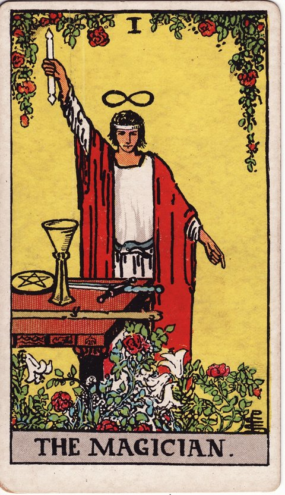

메이저 아르카나 · 타로 카드 백과사전
마법사 (The Magician)

정방향
키워드: 창조적 실행력 · 집중된 의지 · 가능성의 실현 · 번뜩이는 기지 · 실현을 앞둔 저력 · 타오르는 추진 의지
조언: 머릿속 계획을 미루지 말고 지금 가진 것들을 모아 구체적인 행동으로 옮겨보세요.
연애운
솔로
혼자인 사람은 원하는 상대에게 적극적으로 다가가면 좋은 결과를 얻을 수 있는 시기입니다. 매력을 자연스럽게 드러내는 것만으로도 상대의 마음을 움직일 수 있어요.
커플
커플은 서로에게 원하는 바를 분명하게 표현하면 관계가 한 단계 발전하는 시기입니다. 망설이던 이야기를 먼저 꺼내보세요.
재물운
소비
필요한 곳에 계획적으로 지출하면 만족스러운 결과를 얻는 시기입니다. 가진 자원을 효율적으로 활용하는 감각이 빛을 발합니다.
투자
가진 정보와 능력을 활용해 투자 기회를 적극적으로 살펴볼 만한 시기입니다. 준비된 만큼 좋은 결과로 이어질 수 있어요.
취업운
구직
실력을 어필할 기회가 왔을 때 자신 있게 나서면 원하는 자리를 얻을 수 있는 시기입니다. 준비해온 것을 아낌없이 보여주세요.
이직
새로운 자리에서 가진 역량을 마음껏 발휘할 수 있는 좋은 전환점이 될 수 있는 시기입니다. 주저하지 말고 그동안 쌓아온 능력을 적극적으로 보여주세요.
직장운
팀워크
가진 실력을 팀에서 적극적으로 발휘하며 신뢰를 얻는 시기입니다. 적극적으로 나서서 역할을 맡으면 자연스럽게 인정받을 수 있어요.
개인성과
낯선 업무도 스스로의 능력으로 척척 해결해나갈 수 있는 시기입니다. 어려운 문제일수록 자신 있게 부딪혀보면 의외로 쉽게 풀릴 수 있습니다.
사업운
창업준비
가진 역량과 자원을 하나로 모아 사업을 구체화하기 좋은 시기입니다. 아이디어를 실행으로 옮기는 결단력이 필요합니다.
운영중
다양한 수완을 발휘해 사업 기회를 넓혀가는 시기입니다. 적극적으로 움직인 만큼 사업이 순조롭게 확장되어 갑니다.
학업운
시험준비
집중력과 이해력이 높아져 효율적으로 시험을 준비할 수 있는 시기입니다. 아는 것을 정확히 표현하는 연습이 도움이 됩니다.
진로고민
여러 재능 중 무엇을 살릴지 스스로 방향을 정할 수 있는 좋은 시기입니다. 자신의 강점을 적극적으로 활용해보세요.
건강운
신체
스스로 컨디션을 잘 관리하며 활력을 되찾는 시기입니다. 몸에 맞는 관리법을 찾아 꾸준히 실천해보세요.
정신
집중력과 자신감이 채워지며 정신적으로 안정된 시기입니다. 원하는 것에 마음을 쏟기 좋은 때입니다.
대인관계운
새로운 인연
먼저 인사를 건네고 마음을 여는 태도가 새로운 사람들과 좋은 관계로 이어지는 시기입니다. 낯가림 대신 자신감 있는 첫 마디가 좋은 인상을 남깁니다.
기존 관계
그동안 쌓아온 신뢰를 바탕으로 관계를 주도해나가기 좋은 시기입니다. 먼저 제안하고 이끄는 역할을 맡아도 자연스럽게 받아들여질 수 있습니다.
명예운
실력을 제대로 발휘해 좋은 평판을 얻는 시기입니다. 노력한 만큼의 인정이 뒤따를 수 있어요.
이사운
원하는 곳으로 계획한 이동을 성사시킬 수 있는 시기입니다. 필요한 준비를 적극적으로 갖춰나가세요.
자식운
아이를 위해 능동적으로 무언가를 이끌어가기 좋은 시기입니다. 아이의 재능을 발견하고 키워줄 수 있어요.
역방향
키워드: 헛된 자신감 · 속임수 · 능력의 오용 · 겉치레뿐인 언변 · 흔들리는 확신 · 잘못 쓰인 재주
조언: 능력을 어디에, 왜 쓰고 있는지 스스로에게 솔직하게 물어보세요.
연애운
솔로
상대를 조종하려 하거나 진심 없는 태도로 다가가면 관계가 시작도 하기 전에 틀어질 수 있습니다. 목적이 아닌 마음으로 다가가세요.
커플
말재주로 상황을 넘기려는 태도가 오히려 신뢰를 깎아먹을 수 있는 시기입니다. 꾸밈없는 진심을 보여주는 것이 더 필요합니다.
재물운
소비
과시하려는 소비가 예산을 흔들 수 있는 시기입니다. 보여주기식 지출은 잠시 자제하는 것이 좋습니다.
투자
무리한 자신감으로 검증되지 않은 투자에 뛰어들면 손실로 이어질 수 있으니 주의하세요. 투자를 결정하기 전에 객관적인 자료로 다시 한번 검증하는 습관을 들이세요.
취업운
구직
과장된 자기소개나 근거 없는 자신감이 오히려 신뢰를 떨어뜨릴 수 있으니 내실을 다지세요. 포장보다 실제로 증명할 수 있는 경험과 자료를 준비하는 편이 낫습니다.
이직
능력을 과신한 채 성급하게 옮겼다가 기대와 다른 상황에 부딪힐 수 있습니다. 새로운 자리의 조건을 다시 한번 냉정하게 따져보는 시간이 필요합니다.
직장운
팀워크
과신한 태도로 팀에서 실수를 하거나 마찰이 생길 수 있는 시기입니다. 혼자 다 하려 하지 말고 동료의 의견도 함께 들어보세요.
개인성과
능력을 과신하다 정작 중요한 부분을 놓칠 수 있으니 점검이 필요합니다. 속도를 조금 늦추더라도 꼼꼼히 확인하는 과정을 거치세요.
사업운
창업준비
겉으로만 그럴듯한 계획으로 투자자나 파트너를 설득하려 하면 신뢰를 잃을 수 있습니다. 실현 가능한 근거를 갖추지 않으면 관계가 오래가지 못할 수 있어요.
운영중
무리한 수완을 부리다 거래처나 고객의 신뢰를 잃을 수 있는 시기이니 정직한 운영이 필요합니다. 당장의 이익보다 장기적인 신뢰를 우선순위에 두세요.
학업운
시험준비
요령만 부리려다 기본기를 놓치면 실전에서 흔들릴 수 있으니 기초부터 다시 점검하세요. 지름길을 찾기보다 차근차근 기본을 다지는 것이 결국 더 빠른 길입니다.
진로고민
여러 재능을 두고 갈피를 못 잡거나, 근거 없는 자신감으로 방향을 성급히 정할 수 있습니다. 충분한 정보 없이 성급하게 결정하기보다 하나씩 신중하게 따져보세요.
건강운
신체
무리하게 몸을 밀어붙이다 탈이 날 수 있으니 컨디션을 과신하지 마세요. 평소보다 회복하는 시간을 조금 더 넉넉하게 잡는 것이 좋습니다.
정신
근거 없는 자신감으로 상황을 오판하며 마음이 들뜰 수 있으니 차분히 점검하세요. 들뜬 마음을 가라앉히고 현실적인 기준으로 다시 살펴보는 시간이 필요합니다.
대인관계운
새로운 인연
처음부터 상대를 이용하려는 태도를 보이면 관계가 오래가지 못할 수 있습니다. 목적을 앞세우기보다 진솔하게 다가가는 태도가 필요합니다.
기존 관계
말로만 앞세우는 태도가 오래된 관계에서는 오히려 신뢰를 깎을 수 있습니다. 말보다 꾸준한 행동으로 신뢰를 다시 쌓아가는 것이 중요합니다.
명예운
과장된 언행이나 속임수가 드러나면 평판에 큰 타격을 줄 수 있으니 신중하게 처신하세요. 작은 거짓도 크게 부풀려질 수 있으니 처음부터 정직하게 임하는 것이 안전합니다.
이사운
충분한 확인 없이 서두른 이동 계획이 뜻대로 진행되지 않을 수 있습니다. 서두르기보다 조건을 하나씩 다시 확인하는 편이 안전합니다.
자식운
지나치게 강압적인 태도로 아이를 이끌려 하면 반발을 살 수 있으니 주의하세요. 아이의 의견도 존중하며 함께 방향을 정해가는 태도가 필요합니다.
같은 슈트: 바보 · 마법사 · 여사제 · 여황제 · 황제 · 교황 · 연인 · 전차 · 힘 · 은둔자 · 운명의 수레바퀴 · 정의 · 매달린 사람 · 죽음 · 절제 · 악마 · 탑 · 별 · 달 · 태양 · 심판 · 세계
홈에서 직접 카드 뽑아보기 ↗